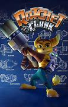
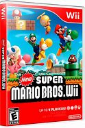
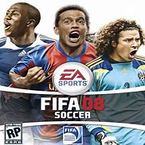

a continuacion mostraremos una tabla de los juegos mas jugados en los años 2000 al 2010, para ver la importancia que tuvo cada uno de estos
| ratchet and clank | mas de un millon de jugadores | consola : ps2 | fecha de lanzamiento : 2002 |
| mario bros | 3 millones de jugadores | consola : wii | fecha de lanzamiento : 2008 |
| fifa | 2 millones de jugadores | consola : xbox, ps y nintendo | fecha de lanzamiento : cada año |
En un universo lleno de planetas exóticos y criaturas extravagantes, un intrépido lombax mecánico llamado Ratchet y su fiel compañero robot, Clank, se embarcan en una aventura épica para salvar la galaxia de las garras del malvado Chairman Drek. Armados con un arsenal de armas futuristas y habilidades únicas, Ratchet y Clank enfrentan desafíos deslumbrantes mientras recorren mundos vibrantes y coloridos. Desde las bulliciosas calles de Metrópolis hasta las ruinas ancestrales de Planeta Veldin, cada paso los acerca más a desentrañar los oscuros planes de Drek y su ejército de drones. Con un humor característico, personajes entrañables y una acción trepidante, "Ratchet & Clank" te sumerge en una odisea intergaláctica llena de peligros y descubrimientos. ¿Podrán nuestros valientes héroes detener a Drek antes de que sea demasiado tarde y salvar la galaxia de una vez por todas? La aventura está a punto de comenzar.
En el mágico Reino Champiñón, el intrépido fontanero italiano Mario y su fiel compañero, el hermano menor Luigi, se enfrentan a desafíos sin fin para rescatar a la Princesa Peach de las garras del malvado Rey Koopa, también conocido como Bowser. Armados con su valentía y habilidades únicas, los hermanos Mario se adentran en los coloridos mundos del Reino Champiñón, desde los verdes campos de hierba hasta los desafiantes castillos flotantes. Saltando sobre Goombas, esquivando caparazones de Koopa y recolectando monedas brillantes, Mario y Luigi luchan contra los secuaces de Bowser en su búsqueda por salvar a la princesa y restaurar la paz en el reino. Con su carisma inigualable y su inquebrantable determinación, Mario y Luigi se enfrentan a todo tipo de desafíos, desde niveles llenos de trampas hasta encuentros épicos con Bowser y sus secuaces. Pero con cada salto, cada moneda recolectada y cada enemigo derrotado, los hermanos Mario demuestran que la verdadera fuerza reside en el trabajo en equipo y en el corazón de un verdadero héroe. Acompaña a Mario y Luigi en esta emocionante aventura llena de acción, humor y nostalgia mientras se embarcan en una misión para salvar al Reino Champiñón y a la Princesa Peach una vez más. ¡Que comience la aventura!
Bienvenido al emocionante mundo de FIFA, donde el fútbol cobra vida con cada toque, pase y gol. Sumérgete en la pasión del deporte rey mientras te embarcas en una experiencia futbolística incomparable. Con gráficos impresionantes y una jugabilidad realista, FIFA te transporta a los estadios más emblemáticos del mundo, desde el Camp Nou hasta el Santiago Bernabéu, donde cada partido es una batalla épica por la gloria. Controla a tus equipos favoritos y compite contra jugadores de todo el mundo en emocionantes partidos multijugador en línea. Con una amplia selección de modos de juego, desde el modo carrera hasta el popular modo Ultimate Team, FIFA ofrece una experiencia única para cada tipo de jugador. Construye tu propio equipo de ensueño, ficha a tus jugadores favoritos y compite en torneos para ganar premios exclusivos y aumentar tu reputación como el mejor manager de fútbol del mundo. Pero FIFA no se trata solo de ganar partidos; también se trata de celebrar la belleza del juego. Desde los increíbles goles de larga distancia hasta las habilidades deslumbrantes, cada momento en el campo es una obra maestra en movimiento que te dejará sin aliento. Únete a la comunidad de FIFA y vive la emoción del fútbol como nunca antes. ¡Prepárate para la acción, la emoción y la gloria con FIFA!
